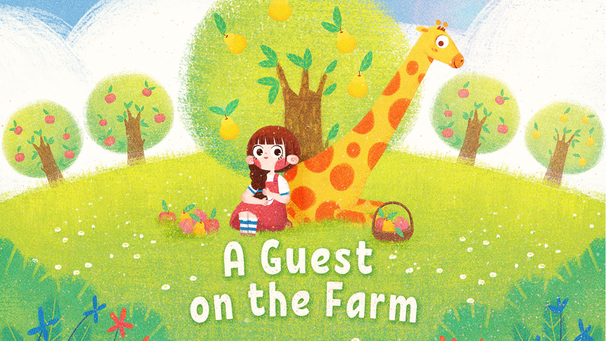

<!DOCTYPE html>
<html>

<head>
  <meta charset="utf-8" />
  <meta name="viewport" content="width=device-width,initial-scale=1">
  <title>Banuba SDK Web AR demo</title>
  <script src="https://cdn.jsdelivr.net/npm/jquery@3.3.1/dist/jquery.min.js"></script>
  <link rel="stylesheet" type="text/css" href="https://cdn.jsdelivr.net/npm/fomantic-ui@2.8.6/dist/semantic.min.css">
  <script src="https://cdn.jsdelivr.net/npm/fomantic-ui@2.8.6/dist/semantic.min.js"></script>
  <link rel="stylesheet" href="styles.css">
  <script src="https://download.agora.io/sdk/web/AgoraRTC_N-4.1.0.js"></script>
</head>

<body class="ui container">
  <aside>     
    <div id="webar">
      
      <button class="ui icon button" id="sound">
        <i class="volume up icon"></i>
      </button>
    </div>
    <!-- <div id="effect-controls">
      <button class="circular ui icon button" id="reset" title="Reset">
        <i class="undo icon"></i>
      </button>
    </div> -->
    
    <div id="effects">
    </div>
    <div id="text" class="text"></div>
  </aside>
  <!-- <main></main> -->

  <script src="AgoraAppId.js"></script>
  <script src="BanubaClientToken.js"></script>
  <script type="module">
    import { Effect, Webcam, Player, Dom, MediaStreamCapture } from "./BanubaSDK.js"

    const text = {
      en: {
        description: "What do a towering giraffe and a little farmer have to teach one another? And how will they help each other learn about the joys of sharing? Find out in this tale of farmyard friendship.",
        "1": "There once was a beautiful young girl named Marie, who lived and worked on a busy little fruit farm, deep in the countryside.",
        "2": "Every morning she would wake early, hop aboard her bright red tractor and ride around the farm.",
        "3": "She climbed her trusty old ladder and picked the fruit from the trees to sell at the local market.",
        "4": "But try as she might, Marie could never pick the tastiest, sweetest fruit from the highest branches...",
        "5": "Even from the very top of her ladder, she just couldn’t reach. Yet she still hoped to one day gather that tasty fruit.",
        "6": "Every evening when her work was done, she would sit alone on the warm hillside...",
        "7": "Eating the sweet, fresh fruit while watching the summer sun set peacefully over the meadows.",
        "8": "One day, quite unexpectedly, a lone giraffe came galloping through the farm.",
        "9": "He was by far the tallest animal Marie had ever seen, taller than an acorn tree...and extremely frightened!",
        "10": "“What’s the matter, my mighty friend?” asked Marie.“How can I help?”",
        "11": "The giraffe cried, “I was being chased by hunters, and now I’m lost and alone. I’m so tired and hungry, and I have nowhere to go.”",
        "12": "“That’s so sad,” said Marie. “Why don’t you stay with me? You’ll be safe, and you can eat all the fresh leaves you like.”",
        "13": "“Oh, thank you so much!” exclaimed the giraffe. “That is so kind of you. I promise I’ll be no trouble at all.”","14": "Over time, Marie and the giraffe became the very best of friends.",
        "15": "When she wasn’t working on the farm, they would laugh and play together in the warm summer sunshine.",
        "16": "Every evening they would sit together on the hillside. The giraffe would munch on his leaves, Marie would eat the sweet fruit...",
        "17": "And together they would watch the summer sun set peacefully over the meadows.",
        "18": "One warm, sunny afternoon, the giraffe was taking a walk through the fruit trees...",
        "19": "When he happened upon the barn where the fruit was stored for market.",
        "20": "The giraffe slowly and carefully pushed his long neck through the open window and peered inside.",
        "21": "There he saw barrels, baskets and carts filled to the brim with juicy, ripe fruit.",
        "22": "The giraffe could not resist. The fruit looked so tasty and sweet, and he was bored of eating nothing but leaves all the time.",
        "23": "He squeezed his enormous body inside...",
        "24": "And started eating the sweet fruit. It was delicious!",
        "25": "The hungry giraffe ate and ate, until his belly was fit to burst, and the barrels, baskets and carts were empty.",
        "26": "His face turned a bright shade of green and he began to feel extremely unwell.",
        "27": "Later that afternoon, Marie was enjoying a peaceful stroll through the farm, hoping to find her friend.",
        "28": "Suddenly she heard a pained groaning sound coming from the barn",
        "29": "She burst into the barn to see what had happened...",
        "30": "And was surprised to find the giraffe sitting forlornly among the empty carts, barrels and baskets...surrounded by peels and seeds.",
        "31": "Marie was shocked and saddened to see that her friend had eaten all the fruit, and there was now none left to sell at the market.",
        "32": "“I’m so sorry!” said the giraffe. “I just wanted to taste the fruit...but it was so tasty that I kept eating. Now I feel unwell.”",
        "33": "“Fruit is tasty,” agreed Marie. “And it’s good for you. But eating too much can make anyone feel unwell.”",
        "34": "“But don’t worry, you’ll soon feel better,” she added reassuringly.",
        "35": "“But now I’ve eaten all the fruit, how can you go to market?” asked the giraffe, feeling extremely guilty and rather silly.",
        "36": "“I have an idea!” replied Marie...",
        "37": "“With your long neck, you can easily pick the sweetest, tastiest fruit from the highest branches where no one else can reach.”",
        "38": "“Would you like to help me on the farm?” she asked.",
        "39": "“It would be my pleasure!” replied the giraffe.",
        "40": "So from that day forward, Marie and the giraffe worked happily together on the farm.",
        "41": "They rode around in their bright red tractor, gathering the fruit in the sunshine.",
        "42": "They picked only the sweetest, juiciest, most delicious fruit from the very highest branches, where only the mighty giraffe could reach.",
        "43": "People would travel from miles around to buy the fruit. Everyone agreed it was by far the sweetest and juiciest fruit in all the land.",
        "44": "Every evening after working on the farm, Marie and her friend the giraffe would sit together on the warm hillside...",
        "45": "Eating the sweet, tasty fruit while watching the sun set peacefully over the meadows...",
        "46": "...and the fruit tasted so much sweeter when it was shared."
      }
    }
    const files = [];
    $('#text').html(text.en.description)
    for(let i=1;i<=46; i++) {
      files.push(i+"");
    }
    const effects = [
      ...files,
      // "Afro",
      // "PoliceMan",
      // "Glasses",
      // "MonsterFactory",
      // "Spider",
    ];

  (async () => {    
      //#region web ar setup
      const player = await Player.create({ clientToken: window.BANUBA_CLIENT_TOKEN })

      player.use(new Webcam({ width: 1280, height: 720 }))

      Dom.render(player, "#webar")
      

      //#region effects
      $.each(effects, async (idx, effectName) => {
        const btn = $(
          `<button class="ui tertiary button elastic loading" id="${idx}">
            ${effectName}
          </button>`
        )
        .appendTo("#effects")

        const effect = await Effect.preload(`effects/${effectName}.zip`)
        
        btn.on("click", (e) => {
          $('#cover').hide();
          const currentPage = e.target.id;
          console.log('currentPage: ', currentPage, $('#'+currentPage));
          $('button').removeClass('active');
          $('#'+currentPage).addClass('active');
          $('#text').html(text.en[parseInt(currentPage) + 1])
          player.applyEffect(effect);
        })
        btn.removeClass("loading")
      })
      //$("#reset").on("click", () => player.clearEffect())
      //#endregion
      //#endregion

      //#region agora set up
      const client = AgoraRTC.createClient({ mode: "rtc", codec: "h264" })

      client.on("user-published", async (user, mediaType) => {
        await client.subscribe(user, mediaType);
        if (mediaType === "video") {
          user.videoTrack.play($("main")[0]);
        }
        if (mediaType === "audio") {
          user.audioTrack.play();
        }
      })

      //#region participants view
      const adjustParticipantsView = async () => {
        const usersCount = client.remoteUsers.length
        const columnsCount = Math.ceil(Math.sqrt(usersCount))
        // $("main").css("grid-template-columns", `repeat(${columnsCount}, 1fr)`)
        const effect = await Effect.preload(`effects/1.zip`)
        player.applyEffect(effect)
      }
      client.on("user-joined", adjustParticipantsView)
      client.on("user-left", adjustParticipantsView)
      //#endregion

      await client.join(window.AGORA_APP_ID, "test", null)
      //endregion

      //#region Banuba Web AR SDK and Agora Web SDK integration
      const stream = new MediaStreamCapture(player)
      const video = await AgoraRTC.createCustomVideoTrack({ mediaStreamTrack: stream.getVideoTrack() })
      //#endregion

      const audio = await AgoraRTC.createMicrophoneAudioTrack()
      await client.publish([ video, audio ])

      //#region sound
      let volume = 100;
      let count = 0;
      const toggleSound = (e) => {
        console.log('togglesound', e.target);
        volume = volume ? 0 : 100
        audio.setVolume(volume);
        const soundElem = $("#sound > i");
        count++;
        
        $("#sound > i").toggleClass("mute", count%2===1);
        $("#sound > i").toggleClass("up", count%2===0)
      }

      $("#sound").on("click", toggleSound)
      //#endregion
    })()
  </script>
</body>

</html>
